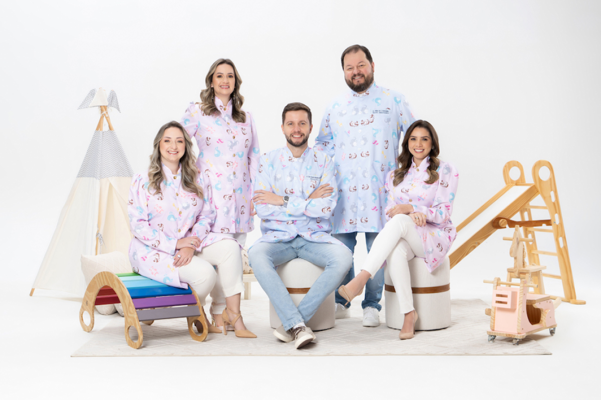
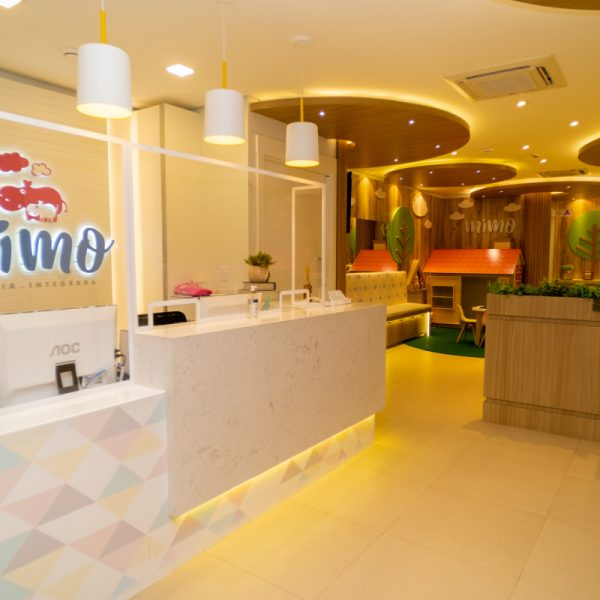
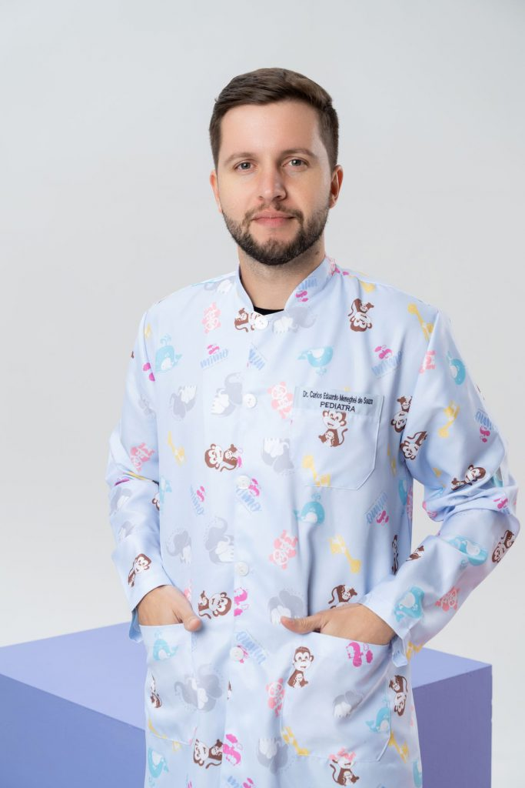
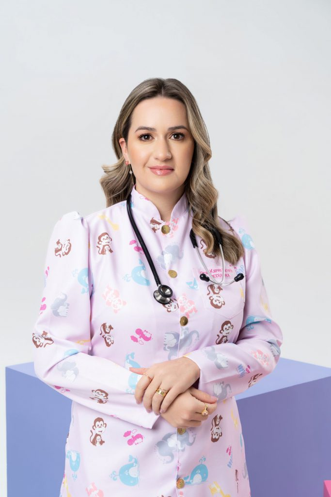

Pediatria
Acompanhamento do crescimento e desenvolvimento, consultas de rotina e orientação para as dúvidas do dia a dia.
Quero agendar uma consultaPEQUENOS PACIENTES. GRANDES CUIDADOS.
Pediatria e especialidades infantis em um só lugar, com atenção às necessidades do seu filho e espaço para ouvir você.
Mimo Pediatria Integrada · Tubarão, SC

COMO PODEMOS AJUDAR
Encontre um ponto de partida para o que sua família precisa. Nossa equipe ajuda você a escolher o atendimento.
Acompanhamento do crescimento e desenvolvimento, consultas de rotina e orientação para as dúvidas do dia a dia.
Quero agendar uma consultaAtendimento em áreas como neurologia, endocrinologia, gastroenterologia e nefrologia pediátrica.
Conhecer as especialidadesPsicologia infantil, nutrição materno-infantil e fisioterapia para complementar o cuidado.
Conversar com a equipeCuidado com a saúde bucal em um espaço dedicado ao atendimento das crianças.
Consultar disponibilidadePediatria · Endocrinologia pediátrica · Neurologia pediátrica · Gastroenterologia pediátrica · Nefrologia pediátrica · Psiquiatria da infância e adolescência · Psicologia infantil · Nutrição materno-infantil · Fisioterapia · Cirurgia pediátrica · Odontopediatria · Preparação e acompanhamento de parto
Peça orientação sobre o atendimento
Um espaço pensado para a infância.BEM-VINDOS À MIMO
A Mimo nasceu do encontro de cinco pediatras com um desejo em comum: reunir diferentes cuidados para a infância em um ambiente acolhedor.
Aqui, o atendimento vai além da consulta. É também uma conversa sobre a rotina, as descobertas e as necessidades de cada família.
QUEM CUIDA DO SEU FILHO
Conheça os pediatras da Mimo. Na hora de agendar, nossa equipe informa os profissionais e horários disponíveis.

Pediatria
CRM/SC 21086 · RQE 17486Pediatria
CRM/SC 22384 · RQE 16080
Pediatria
CRM/SC 22374 · RQE 17507Pediatria
CRM/SC 18468 · RQE 17454Pediatria
CRM/SC 12180 · RQE 7136 / 7884Precisa de outra especialidade?
Conheça nossas áreas de atendimentoANTES DA PRIMEIRA VISITA
Se a sua dúvida não estiver aqui, converse com nossa equipe.
Falar com a MimoFale com a equipe pelo WhatsApp. Informe o atendimento que procura e consulte os profissionais e horários disponíveis. O agendamento é confirmado diretamente pela equipe.
Conte à equipe qual atendimento você está buscando. Ela pode explicar as áreas disponíveis e ajudar com o agendamento. A avaliação clínica acontece durante a consulta.
Valores, formas de pagamento e condições de atendimento devem ser consultados com a equipe antes do agendamento.
Ao agendar, peça à equipe a orientação para o seu atendimento. Tenha disponíveis os documentos e informações que forem solicitados.
Rua Aldomar Cardoso, 125, bairro Passagem, Tubarão, Santa Catarina. Na seção de contato você pode abrir o trajeto no mapa.
O PRÓXIMO PASSO É UMA CONVERSA
Escolha o atendimento e fale com a nossa equipe para consultar horários e agendar.
Conversar pelo WhatsAppVocê será direcionado ao WhatsApp da clínica.